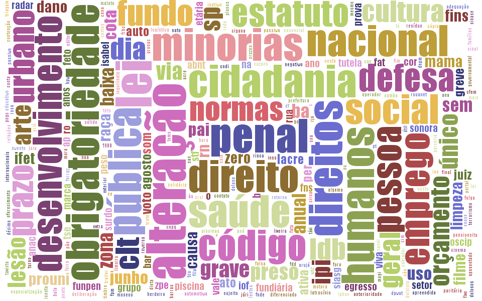

A Câmara das Deputadas
Dinâmica da participação feminina no congresso
Proporção de gênero - Comparativo das últimas cinco legislaturas
Proporção de gênero - Atual legislatura
Visualização de Dados: Grafo - Câmara: Partidos e gênero - atual legislatura
Projetos de Leis - algumas visualizações
Nuvem de tags - Projetos de leis propostos por mulheres
Nuvem de tags - Projetos de leis propostos por homens

Visualização de Dados: Grafo Projetos de Leis propostos por mulheres - atual legislatura